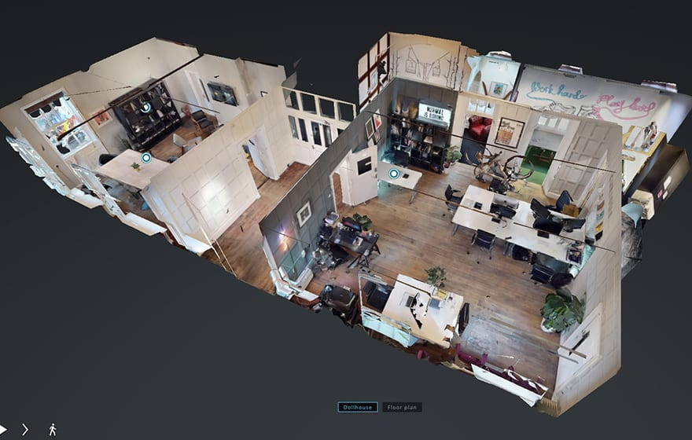

BIMデータの再利用と民主化―― Seeable 社長 Nick Blenkarn との対談
みなさんこんにちは！ 株式会社 ZUMEN の濱口です。
今回は、イギリスのオンラインメディア “BIM+” から、 BIM + AR なテーマの記事のご紹介です。
「“BIM データの再利用と民主化”―― Seeable 社の Nick Blenkarn との対談」
設計段階で構築した三次元点群情報（ドローンで 3D スキャン等で取得）を使って VR/AR などに活用する事業を展開するイギリスの会社 Seeable についての記事です。
Seeable 社・社長の Nick 氏は、創業に至ったきっかけを、 BIM が設計段階でしか使われていないために失われている三次元点群情報の価値を、再利用することで役立てるためだと語っています。⬆️ の画像のように、三次元点群情報と BIM モデルを組み合わせ、 VR/AR 対応のアプリで使用することで、安全管理ミーティングやマーケティング、入札用の情報として活用できるとしています。

これを VR で見られるのはすごいですね！ 立体的なイメージを共有することで、目的物についての話し合いが円滑になりそうです（イメージ画像では、設計段階なのに家具や自転車などがスキャンに含まれているのは少し不思議ですが……）。
地方政府が大規模建造物を企画する際、住民への説明のため静止画のレンダリングや模型の制作に 30,000 ポンド（約 380 万円）を費やすこともある、といいます。 Nick 氏は、設計時に作成した三次元点群情報を活用することで、それよりずっと少ない投資で VR/AR のウォークスルーを提供できると利点を説明しています。
また、Nick 氏は三次元点群情報の構築などを事業とする別会社の取締役も務めています。これらの分野の今後 5 年の見通しを問われて、こう回答しています。
「3D データとその可視化は急速に融合しつつあります。機械学習技術を用いて 360° パノラマの画像を精緻な 3D モデルに変換するシステムを発表しました。パノラマ動画を自動的に 3D モデルに変換することも近いうちに可能になるでしょう。数年前には、固定型のモバイルセンサを車や荷車に設置して、秒間 100 万程度の点群を処理できることに感動していました。今では、列車に設置することで一度に 100 マイル以上の距離を処理することができます。ハードウェアのみならず、ソフトウェアでのイノベーションによって、多量のデータをリアルタイムでクラウドにアップロードし、市街地全体の 3D モデルにアクセスできるようになっています。」
Nick 氏の語るように、BIM を始めとしたイノベーションは建設業界を凄まじいペースで変革していっています。日本ではまだまだ障壁が多く見られますが、今後 5 年はこうした変革がこの国でも巻き起こっていくと考えられます。一歩先をいく海外の情勢をしっかりウォッチして、その波に翻弄されず、うまく乗りこなせるようにしたいところですね。
ちなみに、対談は Nick 氏がイギリス女王と会ったときのことから始まっています。 Seeable 社は、ロイヤル・チャータード・サベイヤーズ協会（イギリスの不動産関係の業界団体だそうです）創立 150 周年記念のイベントで、女王に記事中段のイメージ画像の 3D モデルを AR で体験してもらったそうです。当時 93 歳にも関わらず、「通常の平面図・立面図に比べて、3D で見ることにどのような利点があるのか」という的確な質問を受けて驚いた、といいます。自分が 93 歳のときに、そのときの最先端の技術にここまで適応できるか…英国王室のすごみを感じますね！
それではまた！

濱口 恭平
濱口さんのプロフィールテキストです。